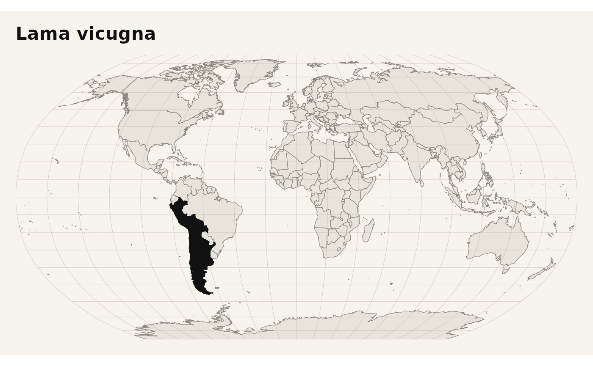

library(rmdd)
library(dplyr)
#>
#> Attaching package: 'dplyr'
#> The following objects are masked from 'package:stats':
#>
#> filter, lag
#> The following objects are masked from 'package:base':
#>
#> intersect, setdiff, setequal, unionrmdd packages the Mammal Diversity Database (MDD) for R
and adds helpers for four common tasks:
- loading the current MDD release locally,
- reconciling mammal names against accepted names, synonyms, and original combinations,
- retrieving structured taxon records,
- summarizing and mapping species distributions.
Package data
After library(rmdd), the main datasets are available
immediately:
tibble::tibble(
dataset = c("mdd_checklist", "mdd_synonyms", "mdd_type_specimen_metadata"),
rows = c(nrow(mdd_checklist), nrow(mdd_synonyms), nrow(mdd_type_specimen_metadata))
)
#> # A tibble: 3 × 2
#> dataset rows
#> <chr> <int>
#> 1 mdd_checklist 6871
#> 2 mdd_synonyms 64683
#> 3 mdd_type_specimen_metadata 138The most commonly used table is mdd_checklist, which
stores the current accepted species list and its associated taxonomy,
status, and distribution fields.
mdd_checklist |>
select(sci_name, order, family, country_distribution, iucn_status) |>
slice_head(n = 5)
#> # A tibble: 5 × 5
#> sci_name order family country_distribution iucn_status
#> <chr> <chr> <chr> <chr> <chr>
#> 1 Ornithorhynchus_anatinus Monotremata Ornitho… Australia NT
#> 2 Tachyglossus_aculeatus Monotremata Tachygl… Australia|Indonesia… LC
#> 3 Zaglossus_attenboroughi Monotremata Tachygl… Indonesia CR
#> 4 Zaglossus_bartoni Monotremata Tachygl… Indonesia|Papua New… VU
#> 5 Zaglossus_bruijnii Monotremata Tachygl… Indonesia CRName reconciliation
mdd_matching() resolves mammal names through a staged
workflow that combines accepted names, synonym data, original
combinations, and fuzzy matching.
names_to_check <- c(
"Puma concolor",
"Felis concolor",
"Panthera onkca",
"Capromys (Pygmaeocapromys) angelcabrerai"
)
mdd_matching(names_to_check) |>
select(
input_name,
matched_name,
taxon_status,
accepted_name,
match_stage
)
#> Warning: ! Multiple fuzzy matches for some species within genus (tied distances).
#> ℹ The first match is selected.
#> # A tibble: 4 × 5
#> input_name matched_name taxon_status accepted_name match_stage
#> <chr> <chr> <chr> <chr> <chr>
#> 1 Puma concolor Puma concol… accepted Puma concolor direct_mat…
#> 2 Felis concolor Felis conco… synonym Puma concolor direct_mat…
#> 3 Panthera onkca Panthera on… accepted Panthera onca fuzzy_matc…
#> 4 Capromys (Pygmaeocapromys… Capromys (P… original_co… Mesocapromys… direct_mat…If you need to inspect how names are parsed before matching, use
classify_mammal_names().
classify_mammal_names(c(
"Mus musculus domesticus",
"Capromys (Pygmaeocapromys) angelcabrerai",
"Panthera onkca"
)) |>
select(
input_name,
orig_genus,
orig_subgenus,
orig_species,
orig_subspecies
)
#> # A tibble: 3 × 5
#> input_name orig_genus orig_subgenus orig_species orig_subspecies
#> <chr> <chr> <chr> <chr> <chr>
#> 1 Mus musculus domesticus Mus NA musculus domesticus
#> 2 Capromys (Pygmaeocaprom… Capromys Pygmaeocapro… angelcabrer… NA
#> 3 Panthera onkca Panthera NA onkca NATaxon retrieval
For programmatic workflows, mdd_taxon_record() returns a
structured object that includes the accepted taxon row in
taxon_tbl, the matching result in match, and
linked synonym rows in synonym_tbl.
mdd_taxon_record("Vicugna vicugna")$taxon_tbl |>
select(
sci_name,
original_name_combination,
main_common_name,
country_distribution,
iucn_status
)
#> # A tibble: 1 × 5
#> sci_name original_name_combination main_common_name country_distribution
#> <chr> <chr> <chr> <chr>
#> 1 Lama_vicugna Camellus Vicugna Vicuña Peru|Bolivia|Chile|Ar…
#> # ℹ 1 more variable: iucn_status <chr>For interactive use, mdd_taxon_info() prints a richer
summary grouped into taxonomy, authority, distribution, and status
sections.
mdd_taxon_info("Vicugna vicugna")
#>
#> ── Lama vicugna ────────────────────────────────────────────────────────────────
#> Query: "Vicugna vicugna"
#> Matched name: "Vicugna vicugna" (synonym)
#> Taxon URL: <https://www.mammaldiversity.org/taxon/1006388/>
#> • Common name: "Vicuña"
#> • Authority: "G. I. Molina 1782"
#> • Order / Family: "Artiodactyla / Camelidae"
#> • IUCN / Extinct / Domestic: "LC (as Vicugna vicugna) / 0 / 0"
#> • Synonym records: 27
#>
#> ── Taxonomy ──
#>
#> • Subclass: "Theria"
#> • Infraclass: "Placentalia"
#> • Magnorder: "Boreoeutheria"
#> • Superorder: "Laurasiatheria"
#> • Order: "Artiodactyla"
#> • Suborder: "Tylopoda"
#> • Family: "Camelidae"
#> • Subfamily: "Camelinae"
#> • Tribe: "Lamini"
#> • Genus: "Lama"
#> • Specific epithet: "vicugna"
#> • Sci name: "Lama vicugna"
#>
#> ── Authority ──
#>
#> • Authority species author: "G. I. Molina"
#> • Authority species year: "1782"
#> • Authority parentheses: "1"
#> • Original name combination: "Camellus Vicugna"
#> • Authority species citation: "Molina, G.I. 1782. Saggio sulla storia naturale
#> del Chili. S. Tommaso d'Aquino, Bologna, 367 pp."
#> • Authority species link: "https://bibdigital.rjb.csic.es/idurl/1/9635"
#> • Nominal names: "vicugna (G. I. Molina, 1782)|vicunna (G. Cuvier, 1797)
#> [incorrect subsequent spelling]|vicunna Tiedemann, 1808 [unjustified
#> emendation]|vicuna (Illiger, 1815) [nomen nudum]|viconnia (Desmoulins, 1823)
#> [unjustified emendation]|vicugna Lesson, 1842 [not published with a generic
#> name]|vicunia (von Tschudi, 1844) [unjustified emendation]|vicuna (Schmarda,
#> 1853) [incorrect subsequent spelling]|frontosa (H. F. P. Gervais & F. Ameghino,
#> 1880)|gracilis (H. F. P. Gervais & F. Ameghino, 1880)|lujanensis (F. Ameghino,
#> 1889)|promesolithica (F. Ameghino, 1889)|azarae (F. P. Moreno & Mercerat,
#> 1891)|minuta (Burmeister, 1891)|pristina (F. Ameghino, 1891)|mensalis O.
#> Thomas, 1917|provicugna (Boule & Thevenin, 1920)|elfridae Krumbiegel, 1944"
#> • Synonym count: "27"
#>
#> ── Type information ──
#>
#> • Type voucher: "untraced (number not known)"
#> • Type kind: "nonexistent"
#> • Type locality: "Chile, \"abondano nella parte della Cordigliera spettante
#> alle Provincie de Coquimbo, e di Copiapó\" (Cordilleras of Coquimbo and Copiapó
#> in northern Chile)."
#>
#> ── Distribution ──
#>
#> • Country distribution: "Peru|Bolivia|Chile|Argentina"
#> • Continent distribution: "South America"
#> • Biogeographic realm: "Neotropic"
#>
#> ── Status ──
#>
#> • Main common name: "Vicuña"
#> • Other common names: "Argentine Vicuña|Peruvian Vicuña"
#> • Iucn status: "LC (as Vicugna vicugna)"
#> • Extinct: "0"
#> • Domestic: "0"
#> • Flagged: "0"
#> • Diff since cmw: "1"
#> • Msw3 matchtype: "sciname match"
#> • Diff since msw3: "0"
#>
#> ── Names and Synonyms ──
#>
#> # A tibble: 8 × 3
#> synonym validity nomenclature_status
#> <chr> <chr> <chr>
#> 1 Camellus Vicugna species available
#> 2 Camelus Vicugna synonym name_combination
#> 3 Camelus vicunna synonym incorrect_subsequent_spelling
#> 4 Lacma vicunna synonym unjustified_emendation
#> 5 Auchenia Vicuña synonym nomen_nudum
#> 6 Auchenia Vicunna synonym name_combination
#> 7 Lama vicugna synonym name_combination
#> 8 auchenia vicugna synonym name_combination
#> ... and 19 more synonym recordsDistribution summaries
mdd_distribution_summary() aggregates the checklist at
country, continent, or subregion level.
mdd_distribution_summary(level = "country") |>
arrange(desc(total_species)) |>
slice_head(n = 10)
#> # A tibble: 10 × 7
#> region orders families genera living_species extinct_species total_species
#> <chr> <int> <int> <int> <int> <int> <int>
#> 1 Indonesia 17 58 241 793 4 797
#> 2 Brazil 11 51 250 785 3 788
#> 3 China 12 56 259 746 0 746
#> 4 Mexico 12 45 205 585 4 589
#> 5 Peru 13 55 229 582 0 582
#> 6 Colombia 13 51 213 532 0 532
#> 7 Democrat… 15 55 208 510 0 510
#> 8 United S… 9 41 164 488 3 491
#> 9 Ecuador 13 51 202 454 0 454
#> 10 India 12 51 202 438 0 438The raw variant leaves filtering decisions explicit:
mdd_distribution_summary_raw(level = "continent") |>
arrange(desc(total_species))
#> # A tibble: 7 × 7
#> region orders families genera living_species extinct_species total_species
#> <chr> <int> <int> <int> <int> <int> <int>
#> 1 Asia 15 75 494 2157 11 2168
#> 2 Africa 15 80 395 1624 9 1633
#> 3 South Ame… 14 62 363 1598 9 1607
#> 4 North Ame… 12 63 325 1096 41 1137
#> 5 Oceania (… 11 44 200 738 42 780
#> 6 Europe 6 38 129 324 2 326
#> 7 Antarctica 2 8 19 27 0 27Distribution maps
mdd_distribution_map() reconciles checklist distribution
units against rnaturalearth polygons and returns a
ggplot object.
mdd_distribution_map("Lama vicugna", quiet = TRUE)
Map styling can be customized through the function arguments, while
the default output is intended to be a neutral base for further
ggplot2 modifications.
Citation
Use mdd_reference() to cite the bundled MDD release used
by the package.
mdd_reference()
#>
#> ── MDD Citation ──
#>
#> Mammal Diversity Database. (2026). Mammal Diversity Database (Version 2.4)
#> [Data set]. Zenodo. https://doi.org/10.5281/zenodo.17033774
#> DOI: <https://doi.org/10.5281/zenodo.17033774>Use base R citation metadata to cite the package itself:
citation("rmdd")
#> To cite rmdd in publications, please use:
#>
#> To cite the rmdd package in publications, please use:
#>
#> Santos Andrade, P. E. (2026). rmdd: Mammal Diversity Database Tools
#> for R. R package version 0.0.1. https://github.com/PaulESantos/rmdd
#>
#> The mammal taxonomy bundled in this package is based on:
#>
#> Mammal Diversity Database. (2026). Mammal Diversity Database (Version
#> 2.4) [Data set]. Zenodo. https://doi.org/10.5281/zenodo.17033774
#>
#> Burgin, C. J., Zijlstra, J. S., Becker, M. A., Handika, H., Alston,
#> J. M., Widness, J., Liphardt, S., Huckaby, D. G., and Upham, N. S.
#> (2025). How many mammal species are there now? Updates and trends in
#> taxonomic, nomenclatural, and geographic knowledge. Journal of
#> Mammalogy, in press. https://doi.org/10.1101/2025.02.27.640393
#>
#> To see these entries in BibTeX format, use 'print(<citation>,
#> bibtex=TRUE)', 'toBibtex(.)', or set
#> 'options(citation.bibtex.max=999)'.